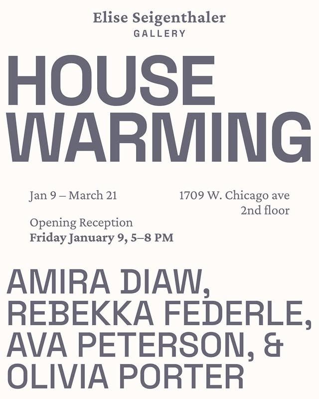

Housewarming
GRAND OPENING
“Housewarming” marks the inaugural exhibition at Elise Seigenthaler Gallery
Opening January 9, 2026, with works by
Amira Diaw, Rebekka Federle, Ava Peterson, and Olivia Porter

GRAND OPENING
“Housewarming” marks the inaugural exhibition at Elise Seigenthaler Gallery
Opening January 9, 2026, with works by
Amira Diaw, Rebekka Federle, Ava Peterson, and Olivia Porter